01
Trải nghiệm
Điều cuộc sống dạy ta qua từng chặng đường.
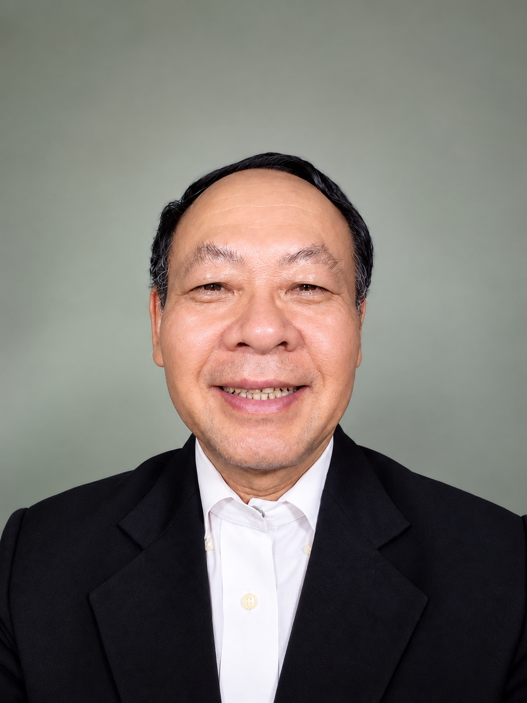
Tôi ghi lại những điều học được trên hành trình sống, phát triển bản thân và lan tỏa những giá trị tích cực.
Một vài lời chia sẻ chân thành từ Nguyễn Văn Sánh.
Nếu video không phát ngay trên trang, bấm vào đây để xem trên YouTube.
Mỗi khung hình là một sắc thái riêng, vẫn giữ tinh thần chân thật và tích cực.
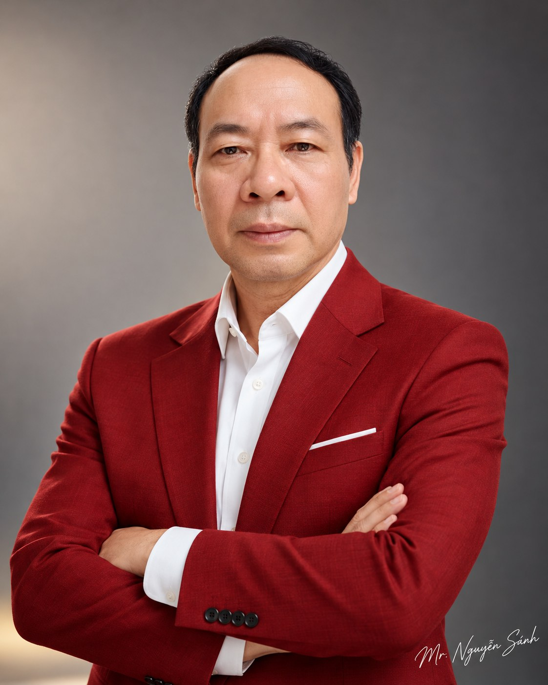
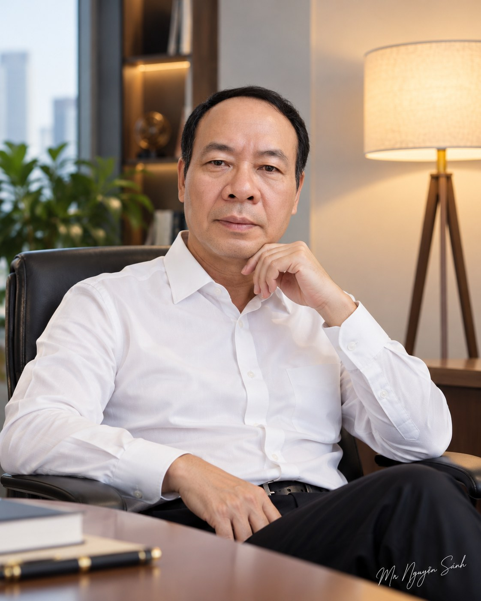
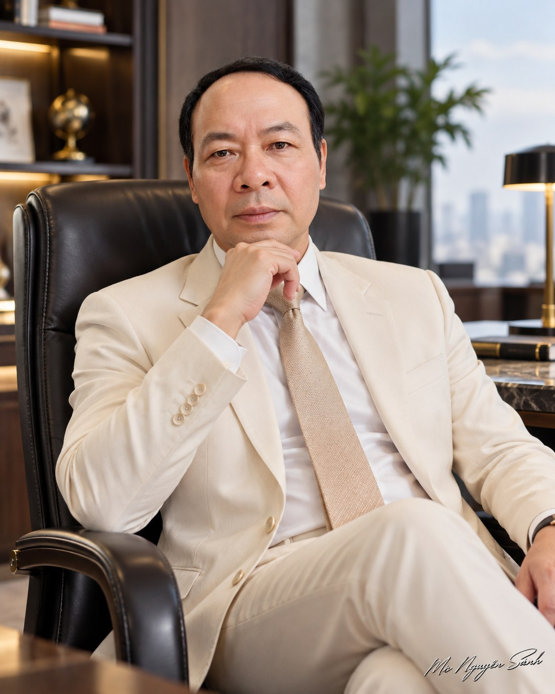
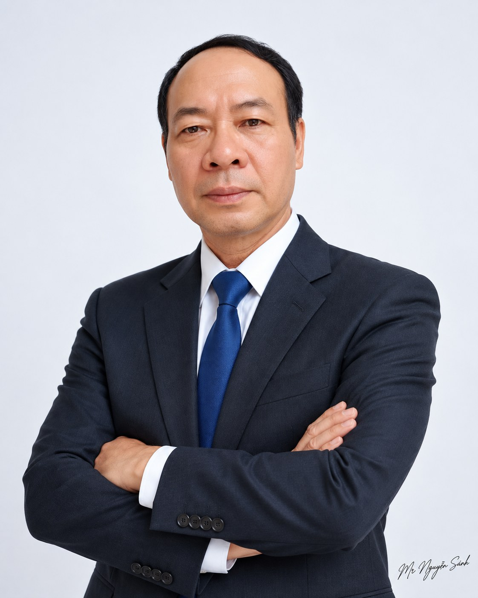
Những khoảnh khắc trên đường đi — mỗi chuyến đi là một câu chuyện, mỗi bức ảnh là một điều đáng nhớ.
Hà Nội — 17/11/2026. Một ngày ở Hà Nội: dạo trung tâm thương mại, ăn trưa cùng đoàn trong nhà hàng ấm cúng và chụp ảnh kỷ niệm với hoa và quà.
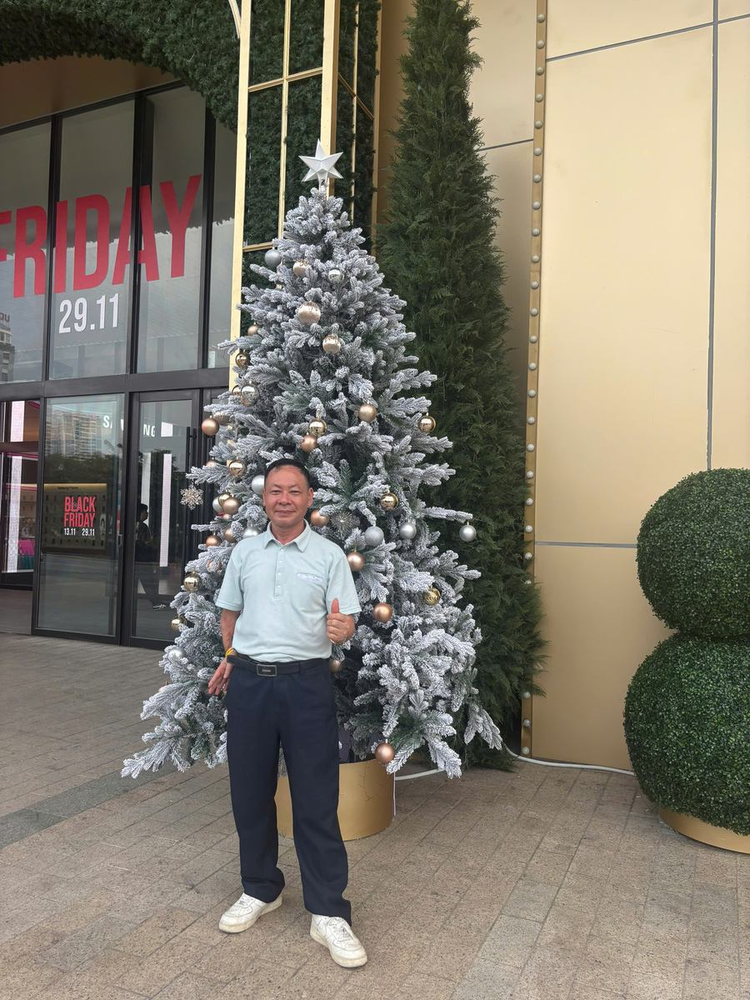
Chiều 17/11 ở Hà Nội, cây thông Noel đã lên đèn trước cửa trung tâm thương mại, trắng như vừa có tuyết rơi. Tôi đứng đây, giơ ngón tay cái, thấy lòng mình nhẹ như một đứa trẻ chờ Giáng sinh. Bạn ơi, đông về rồi — chúc bạn một mùa ấm áp, đủ đầy, và luôn có điều gì đó để mong chờ mỗi ngày nhé.
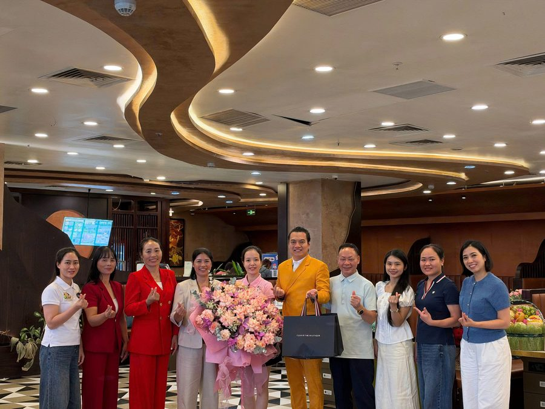
Bữa trưa ở Hà Nội ngày 17/11, cả đoàn mười người quây quần trong nhà hàng ấm cúng, giữa là bó hoa hồng phấn thật to và túi quà xinh xắn. Đây là vinh dự của CLB Doanh nhân thế kỷ 21 khi được chụp ảnh cùng Thầy Tài phiệt Eric Lê của Liên minh các CLB Tri thức và Sách. Ai cũng cười tươi, giơ tay thả tim — niềm vui giản dị mà khó quên. Bạn ạ, đi xa hay đi gần không quan trọng bằng việc có nhau; chúc bạn luôn có những người thương bên cạnh như thế này.
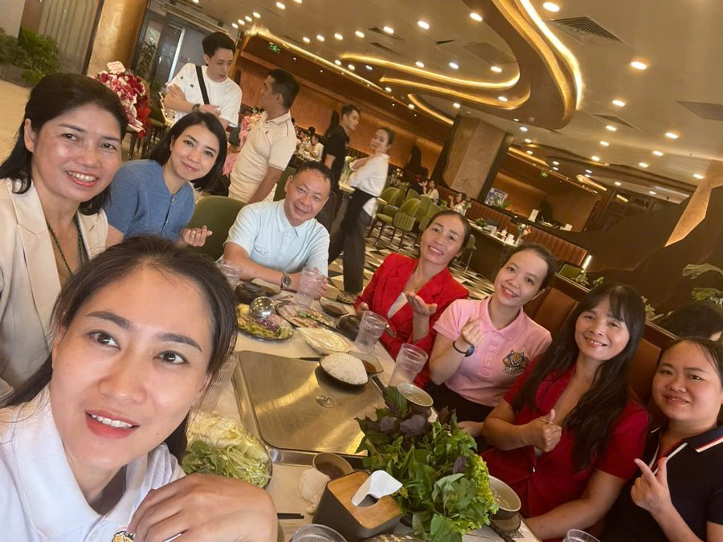
Cả nhóm ngồi quanh nồi lẩu nghi ngút khói, rau xanh và món ăn bày đầy bàn, ai cũng vừa ăn vừa cười. Tôi ngồi giữa, nhìn quanh thấy ai cũng vui là lòng đã no rồi. Bạn ơi, bữa cơm ngon nhất không nằm ở món ăn mà ở những người cùng ngồi — bạn nhớ dành thời gian cho người thương nhé.
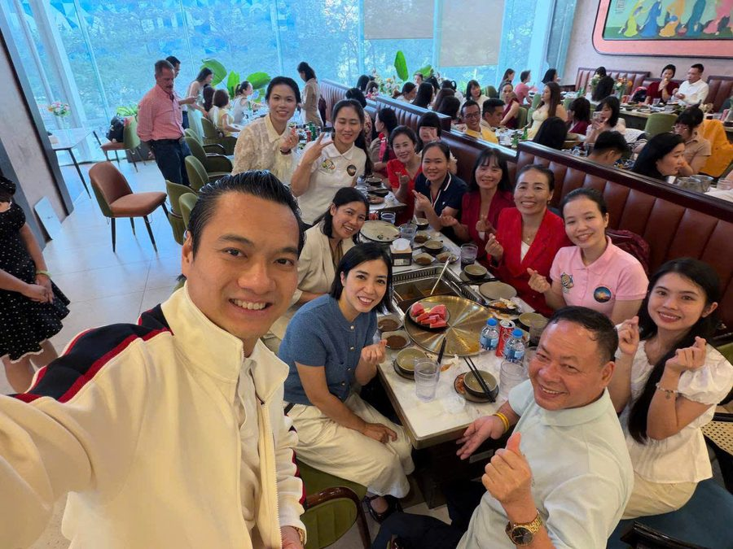
Thầy Tài phiệt Eric Lê giơ máy chụp cả bàn, tôi giơ ngón tay cái, các chị em cười rạng rỡ — một khoảnh khắc tự nhiên không cần sắp đặt. Nhà hàng đông người, ngoài cửa sổ nắng vàng, trong lòng thì ấm áp. Bạn ạ, nụ cười là món quà không tốn tiền mà ai cũng thích nhận — bạn cười nhiều lên nhé.
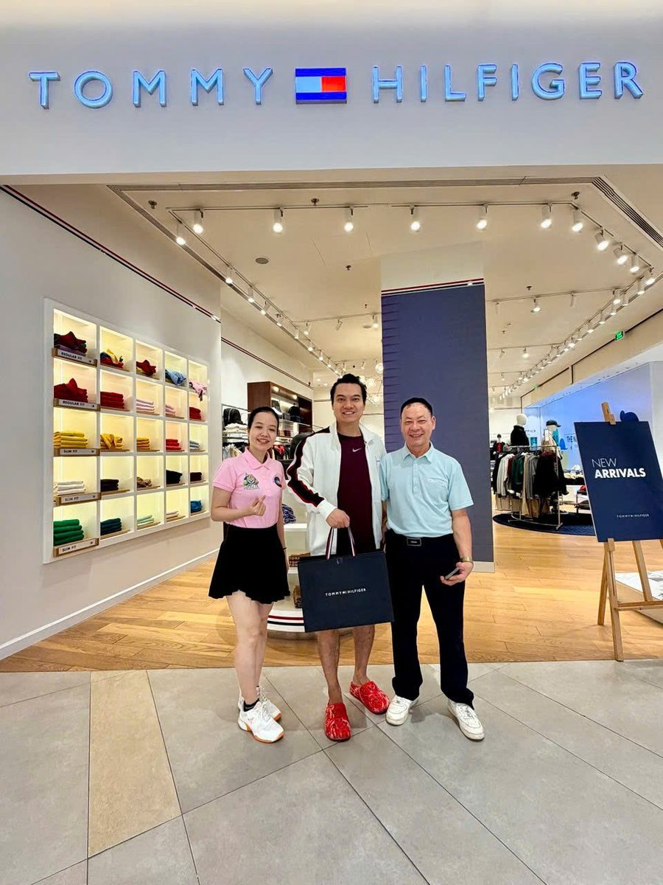
Sáng 17/11, cả đoàn dạo trung tâm thương mại ở Hà Nội, ghé vào cửa hàng quần áo. Tôi cùng bạn Thu Huyền trong CLB Doanh nhân thế kỷ 21 vinh dự được chụp ảnh cùng Thầy Tài phiệt Eric Lê. Thầy xách túi đồ mới, ai cũng vui vẻ. Bạn ơi, mỗi chuyến đi đều có những niềm vui nhỏ như thế — chúc bạn luôn tìm được niềm vui trong những điều giản dị nhất.
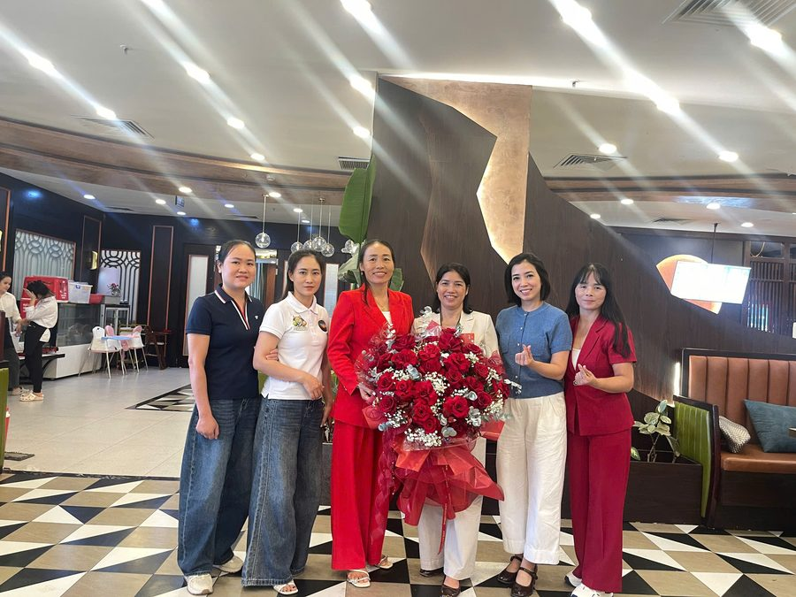
Sáu chị em đứng chụp ở sảnh nhà hàng, chị mặc vest đỏ ôm bó hồng đỏ thật lớn, cả nhóm cười rạng rỡ. Bó hoa to đến mức ôm không xuể — tình cảm cũng đầy như thế. Bạn ạ, hoa đẹp nhất khi được trao bằng cả tấm lòng; chúc bạn hôm nay cũng nhận được một điều ngọt ngào như thế.
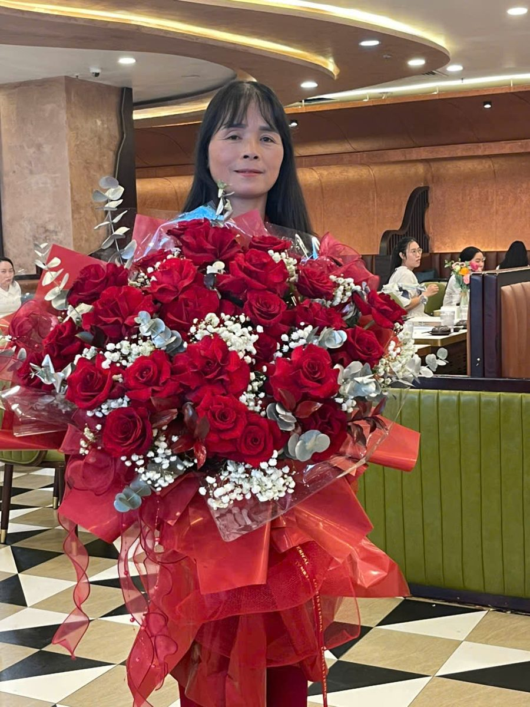
Chị mặc bộ vest đỏ, ôm bó hồng đỏ hơn mấy chục bông, đứng giữa nhà hàng với nụ cười hiền. Hoa đỏ, áo đỏ, sàn caro — cả khung hình rực rỡ mà vẫn ấm áp. Bạn ơi, chúc bạn một ngày tươi như hoa hồng, rạng rỡ như nụ cười này nhé.
Đà Lạt — 30/7/2026. Một ngày ở Đà Lạt: dạo bên hồ Xuân Hương giữa vườn hoa và hàng thông, bế em bé ngắm trời xanh mây trắng, rồi ghé quảng trường Lâm Viên chụp ảnh cùng tòa nhà kính hình bông atisô.
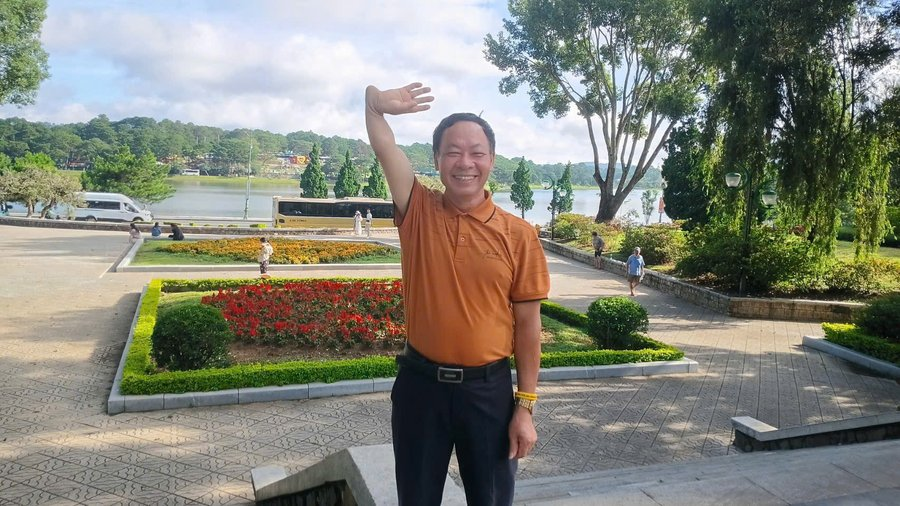
Sáng 30/7 ở Đà Lạt, tôi đứng bên hồ Xuân Hương, sau lưng là vườn hoa đỏ rực, trước mặt là mặt hồ xanh trong. Tôi giơ tay vẫy chào — chào Đà Lạt, chào một ngày mới thật đẹp. Bạn ơi, có những buổi sáng chỉ cần đứng yên, hít một hơi thật sâu là thấy đời đáng sống rồi; chúc bạn hôm nay cũng có một buổi sáng như thế nhé.
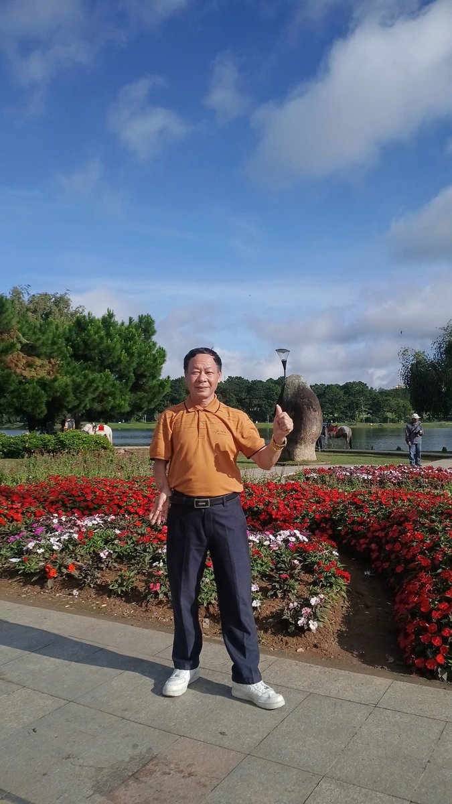
Đà Lạt đúng là thành phố hoa — tôi đứng giữa vườn hoa đỏ trắng thế này, cứ ngỡ mình lạc vào một bức tranh. Trời xanh, hoa đỏ, phía sau là mặt hồ lấp lánh. Bạn ạ, hoa không nói được nhưng hoa biết cách làm người ta vui; chúc bạn một ngày tươi như hoa Đà Lạt nhé.
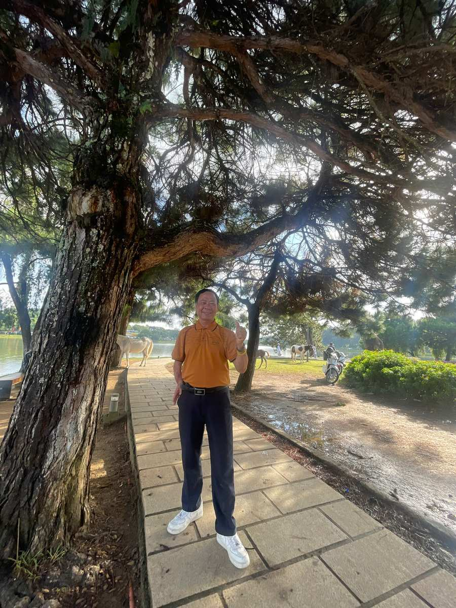
Tôi đứng dưới gốc thông già bên hồ Xuân Hương, phía sau là mấy chú ngựa thong dong gặm cỏ. Thông reo, gió mát, mặt hồ lặng — Đà Lạt hiền như thế đấy. Bạn ơi, giữa bao nhiêu ồn ào, thỉnh thoảng mình cũng cần một chỗ yên như thế này; chúc bạn luôn tìm được một góc bình yên cho riêng mình nhé.
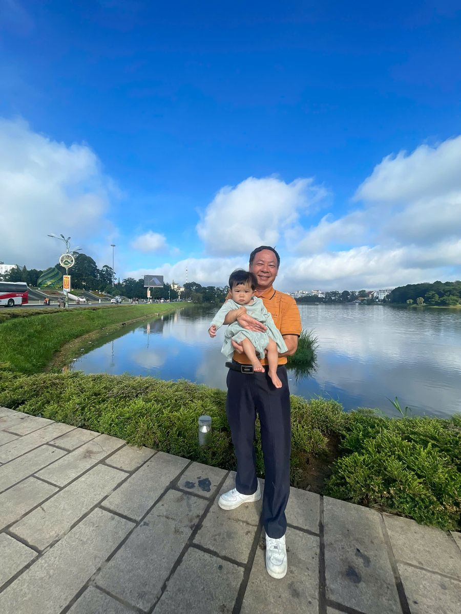
Bên hồ Xuân Hương, trời xanh mây trắng, tôi bế em bé trong tay mà lòng ấm áp lạ. Em bé nhìn quanh với đôi mắt tò mò, còn tôi chỉ mong khoảnh khắc này dài thêm một chút. Bạn ạ, hạnh phúc đôi khi chỉ đơn giản là được ôm một thiên thần nhỏ vào lòng; chúc bạn và gia đình luôn đầy ắp những khoảnh khắc như thế này nhé.
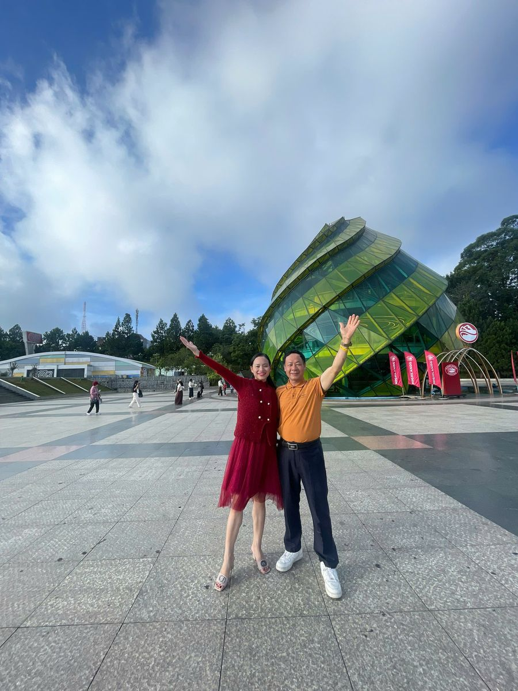
Trước tòa nhà kính hình bông atisô xanh ở quảng trường Lâm Viên, tôi và chị mặc áo đỏ cùng giơ tay vẫy chào. Tòa nhà độc đáo, trời xanh mây trắng, ai cũng cười tươi. Bạn ơi, đi đâu không quan trọng bằng đi cùng ai; chúc bạn luôn có người đồng hành vui vẻ trên mọi nẻo đường nhé.
Singapore — 17–23/6/2026. Một tuần ở Singapore cùng đoàn dự sự kiện Extravaganza 2026: đứng bên tượng sư tử biển Merlion, dạo Gardens by the Bay, ngắm thác nước mái vòm kính và giương cao lá cờ Tổ quốc giữa hội trường Singapore EXPO.
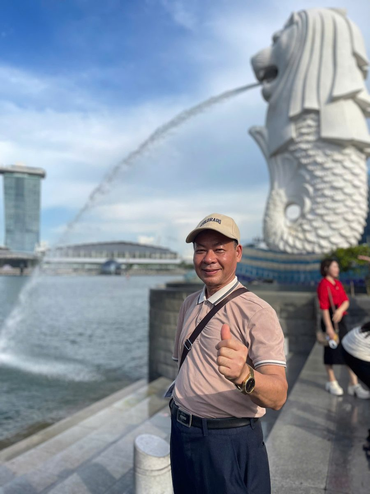
Tượng sư tử biển Merlion phun nước sau lưng tôi, xa xa là ba tòa tháp Marina Bay Sands và bảo tàng ArtScience hình bông sen — Singapore chào tôi bằng khung cảnh đẹp nhất của mình. Tôi đội mũ, giơ ngón tay cái, thấy lòng phơi phới như một đứa trẻ lần đầu ra biển lớn. Bạn ơi, đi xa để thấy thế giới rộng, về gần để thấy lòng mình rộng hơn; chúc bạn sớm có một chuyến đi như thế nhé.
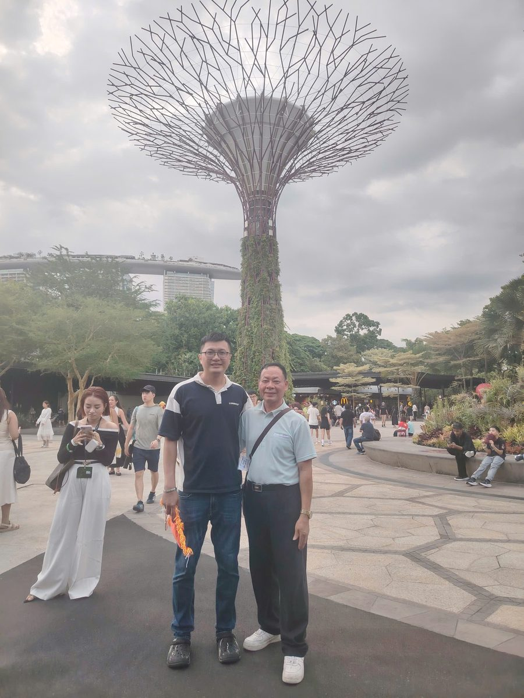
Tôi đứng dưới cây siêu thực khổng lồ ở Gardens by the Bay, cùng người bạn đồng hành — cây cao vút phủ đầy cây xanh, xa xa là Marina Bay Sands. Giữa thành phố hiện đại mà có một khu vườn xanh mát thế này, Singapore khéo giữ thiên nhiên thật. Bạn ạ, cây cối không biết nói nhưng dạy ta cách sống chậm lại; chúc bạn hôm nay cũng tìm được một góc xanh cho riêng mình nhé.
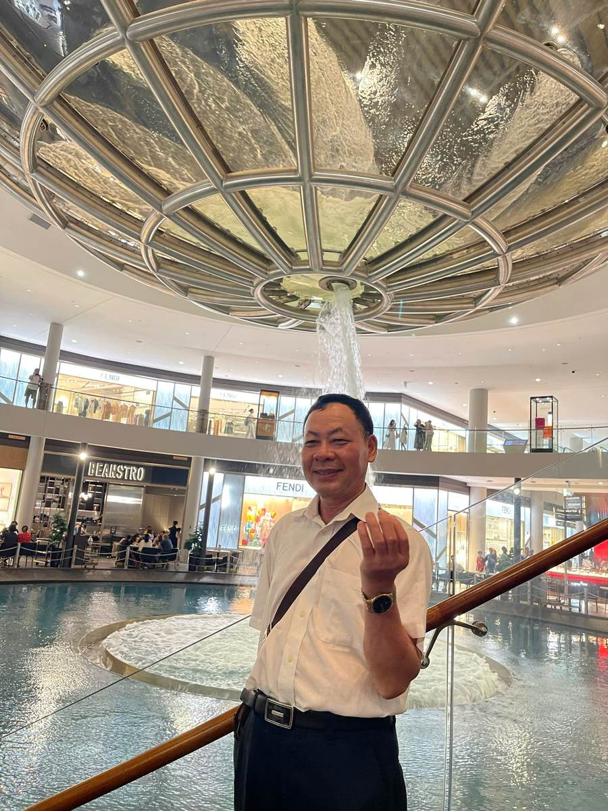
Giữa trung tâm thương mại bên vịnh Marina, một thác nước đổ từ mái vòm kính xuống hồ nước trong xanh — đứng đây mà ngỡ mình đang ở giữa thiên nhiên chứ không phải trong nhà. Nước chảy róc rách, lòng người cũng lắng lại. Bạn ơi, giữa bao nhiêu ồn ào, thỉnh thoảng mình cũng cần nghe tiếng nước chảy thế này; chúc bạn luôn giữ được một khoảng lặng bình yên nhé.
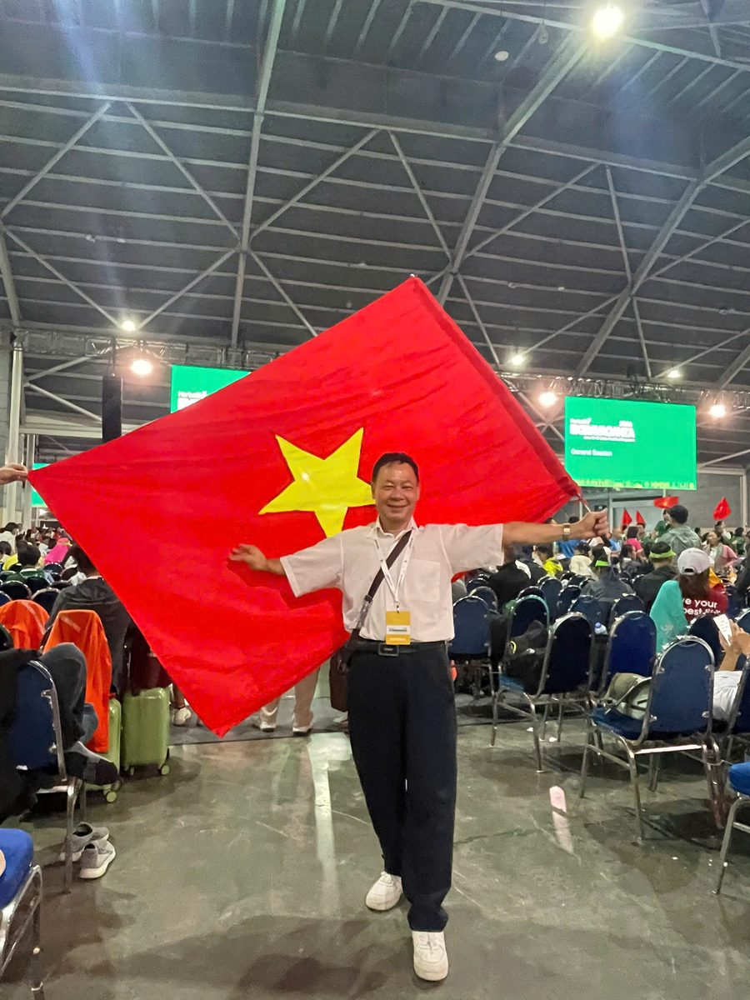
Giữa hội trường Extravaganza ở Singapore EXPO, tôi giương cao lá cờ đỏ sao vàng — bao nhiêu người từ khắp châu Á nhìn về, mà lòng tôi chỉ thấy tự hào hai tiếng Việt Nam. Đi xa mới thấy yêu quê hương hơn, bạn ạ. Bạn ơi, dù ở đâu, mình vẫn mang Tổ quốc trong tim; chúc bạn luôn tự hào và vững bước nhé.
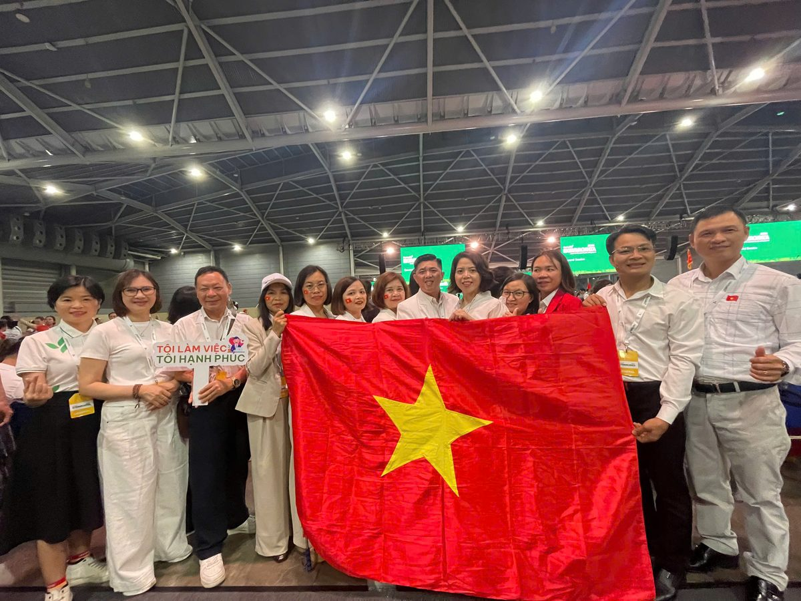
Cả nhóm mười hai người cùng giương lá cờ Việt Nam trong hội trường Extravaganza, tôi cầm tấm biển "Tôi làm việc tôi hạnh phúc" — làm việc mà vui như đi chơi thì còn gì bằng. Ai cũng cười tươi, má dán hình cờ nhỏ xinh. Bạn ạ, hạnh phúc không ở đâu xa, nó ở ngay trong những việc mình làm mỗi ngày với cả tấm lòng; chúc bạn luôn tìm thấy niềm vui trong công việc nhé.
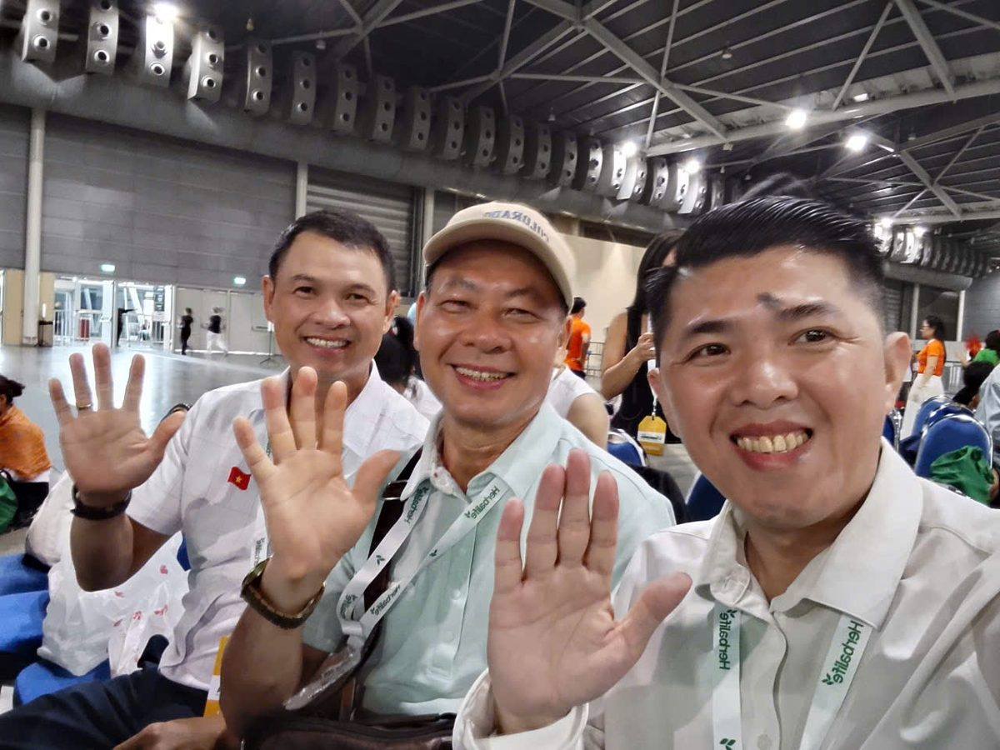
Trong hội trường ở Singapore, ba anh em chúng tôi cùng giơ tay vẫy chào — tôi ngồi giữa, đội mũ, cười thật tươi. Đi sự kiện quốc tế mà có anh em bên cạnh, vừa học hỏi vừa vui. Bạn ơi, đi đâu cũng vậy, có người đồng hành thì đường xa cũng thành gần; chúc bạn luôn có những người anh em tốt bên cạnh nhé.
Cả đoàn chụp ảnh lưu niệm bên tượng sư tử biển Merlion, cùng giương băng rôn Extravaganza 2026 Singapore — tượng Merlion phun nước, Marina Bay Sands sừng sững sau lưng, ai cũng vẫy tay cười tươi. Một tấm hình mà gói cả chuyến đi bảy ngày. Bạn ơi, kỷ niệm đẹp nhất là kỷ niệm có nhau; chúc bạn luôn có những chuyến đi đáng nhớ bên những người thương nhé.
Cam Ranh — 2026. Mùa hè nhiệm màu 2026 cùng Liên minh các CLB Tri thức và Sách: dạo bãi biển Cam Ranh, dự giải Pickleball Cup, bế em bé dạo chơi ở The Empyrean Cam Ranh Beach Resort và tiệc tối ngoài trời dưới hàng dừa.
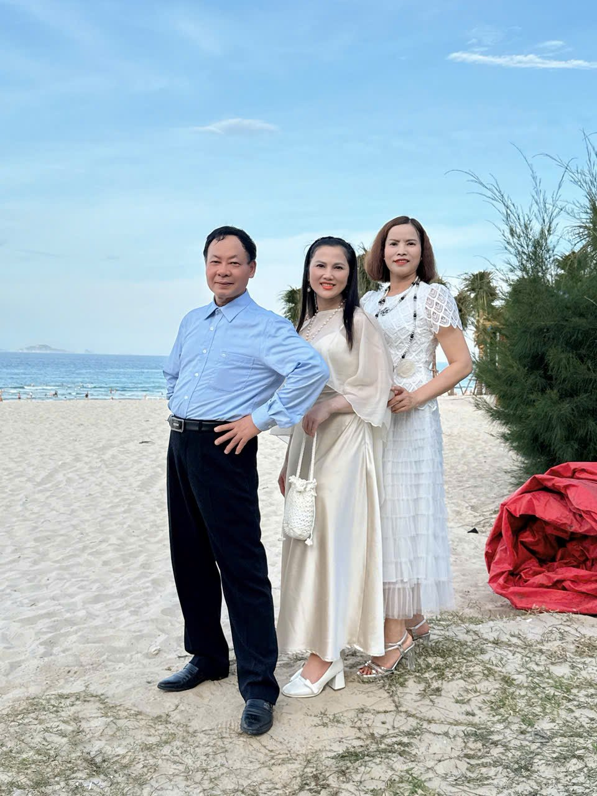
Tôi đứng trên bãi cát trắng Cam Ranh cùng hai chị bạn — biển xanh sau lưng, gió mát lồng lộng, ai cũng cười tươi. Đi biển mà có người đồng hành thì nắng cũng dịu đi, sóng cũng hiền hơn. Bạn ơi, có những ngày đẹp không cần cầu kỳ, chỉ cần đứng cạnh nhau thế này là đủ; chúc bạn luôn có những người bạn đồng hành như thế nhé.
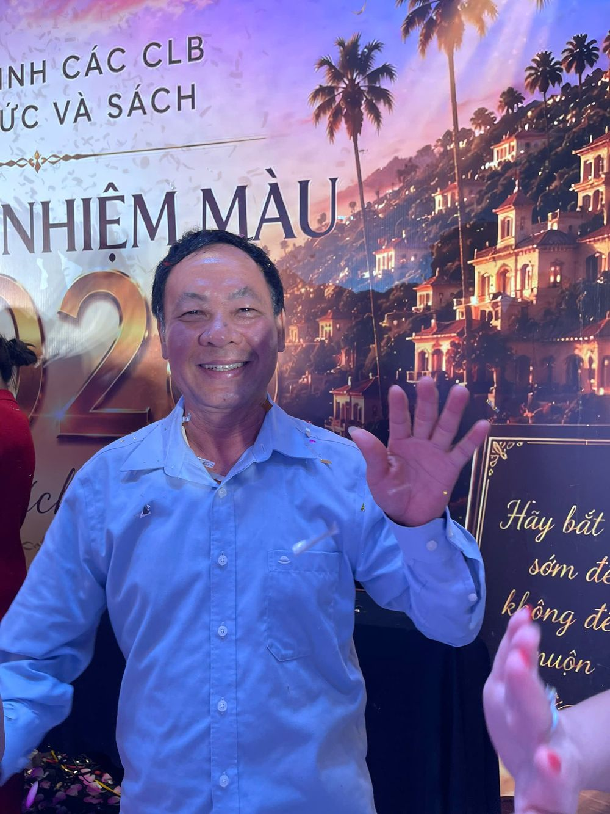
Trước phông nền "Mùa hè nhiệm màu 2026" của Liên minh các CLB Tri thức và Sách, tôi giơ tay vẫy chào — hoa giấy còn vương trên áo, lòng thì phơi phới. Cả một mùa hè gặp gỡ, học hỏi và sẻ chia gói trong một cái vẫy tay. Bạn ạ, mùa hè nào cũng qua đi, nhưng những gì mình học được thì ở lại; chúc bạn có một mùa hè đáng nhớ như thế nhé.
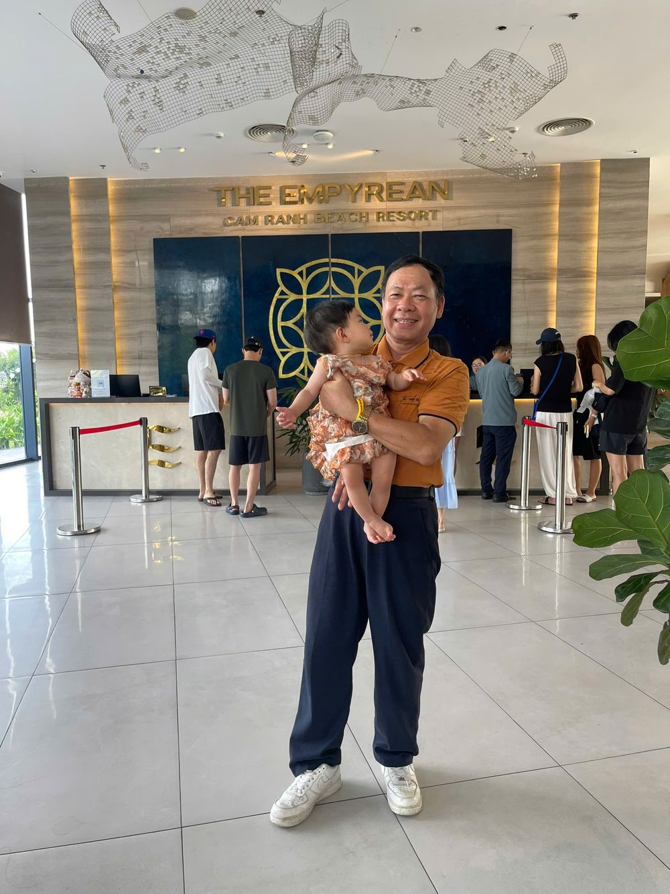
Trong sảnh The Empyrean Cam Ranh Beach Resort, tôi bế em bé trong tay — em ngước nhìn tôi, mắt tròn xoe, tôi cười mà lòng mềm ra. Đi xa mà có em bé bên cạnh thì mệt mấy cũng tan. Bạn ơi, niềm vui đôi khi chỉ nhỏ bằng một vòng tay thế này thôi; chúc bạn luôn có những niềm vui nhỏ mà lớn lao như thế nhé.
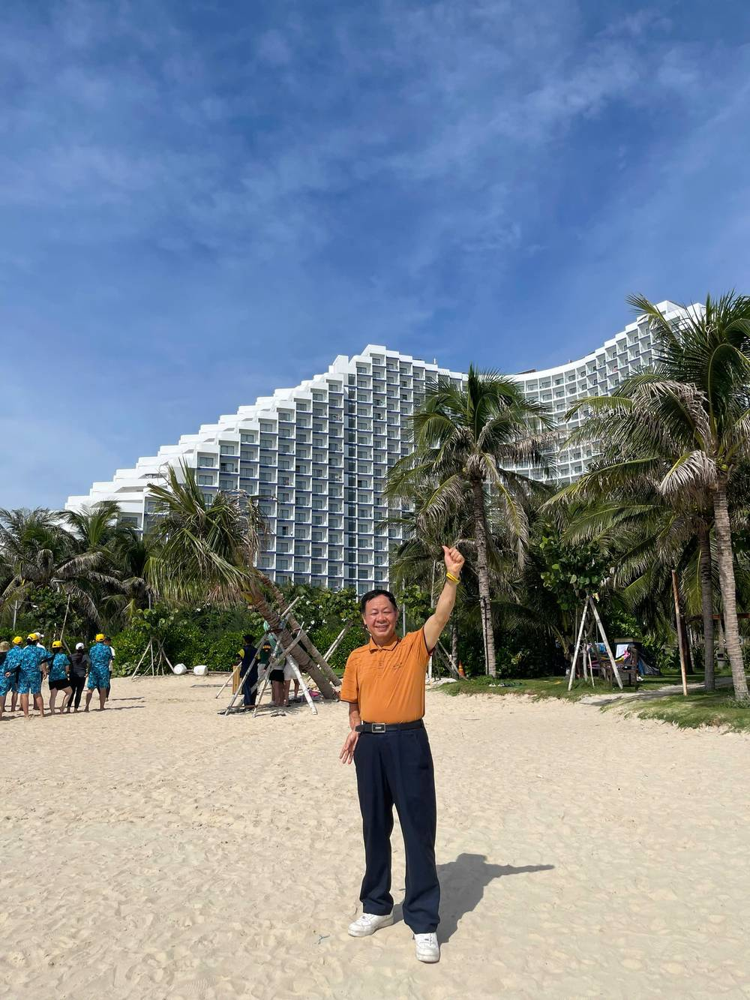
Tôi đứng một mình trên bãi cát Cam Ranh, giơ tay chào trời xanh — sau lưng là hàng dừa và tòa tháp trắng của khu nghỉ dưỡng. Biển rộng, trời cao, lòng người cũng rộng theo. Bạn ạ, có những lúc chỉ cần đứng một mình giữa thiên nhiên là đủ thấy mình giàu có; chúc bạn sớm có một buổi sáng như thế nhé.
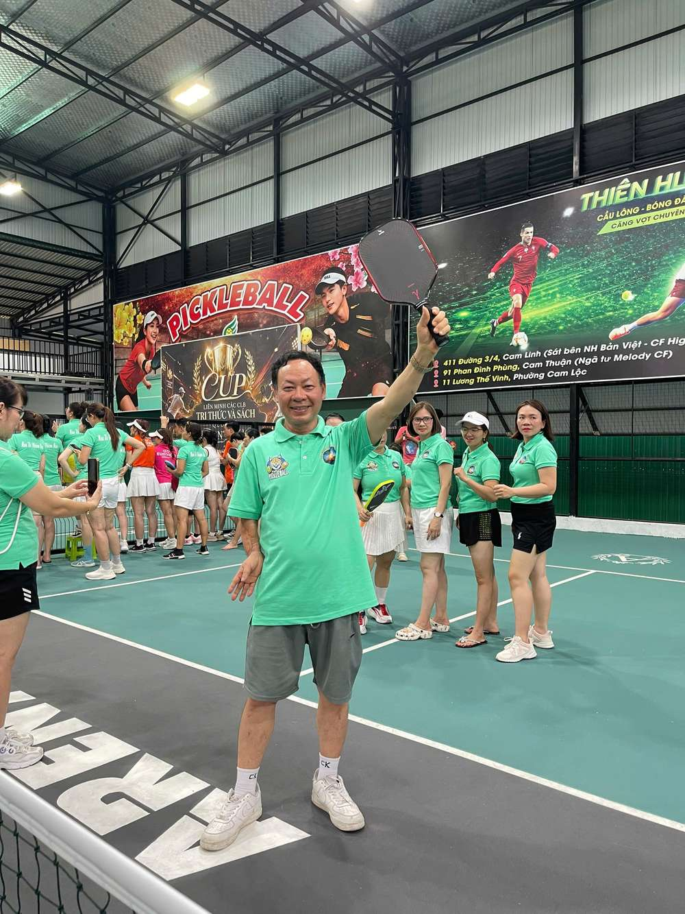
Trên sân pickleball trong nhà, tôi giơ cao cây vợt — sau lưng là băng rôn giải Pickleball Cup của Liên minh các CLB Tri thức và Sách, xung quanh là các chị em áo xanh rộn ràng. Ra sân thì không còn tuổi tác, chỉ còn tiếng cười và mồ hôi. Bạn ơi, vận động là cách đơn giản nhất để giữ mình trẻ; chúc bạn luôn giữ được một môn thể thao mình yêu nhé.
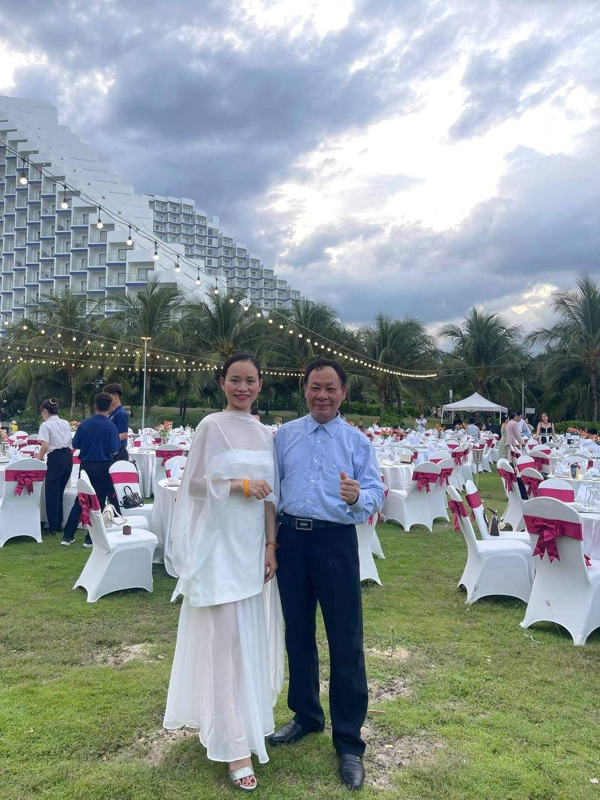
Buổi tối ở Cam Ranh, tôi đứng cùng chị mặc váy trắng giữa bàn tiệc ngoài trời — đèn dây sáng lung linh, ghế phủ nơ đỏ, sau lưng là hàng dừa và tòa tháp trắng. Ăn tối dưới bầu trời thế này thì món gì cũng ngon hơn. Bạn ạ, bữa ăn ngon nhất không phải ở món ăn mà ở người ngồi cùng; chúc bạn luôn có những bữa tối ấm áp như thế nhé.
Kênh Gà – Ninh Bình — 28/8/2026. Gặp mặt kỷ niệm 45 năm ngày ra trường của lớp 10K, Trường Cấp III Kim Thành (niên khóa 1978–1981) tại Minawa Kênh Gà: chụp ảnh tập thể quàng khăn rằn ri, thăm chùa cổ, dạo bên hồ đá và lên thuyền xuôi dòng sông Kênh Gà.
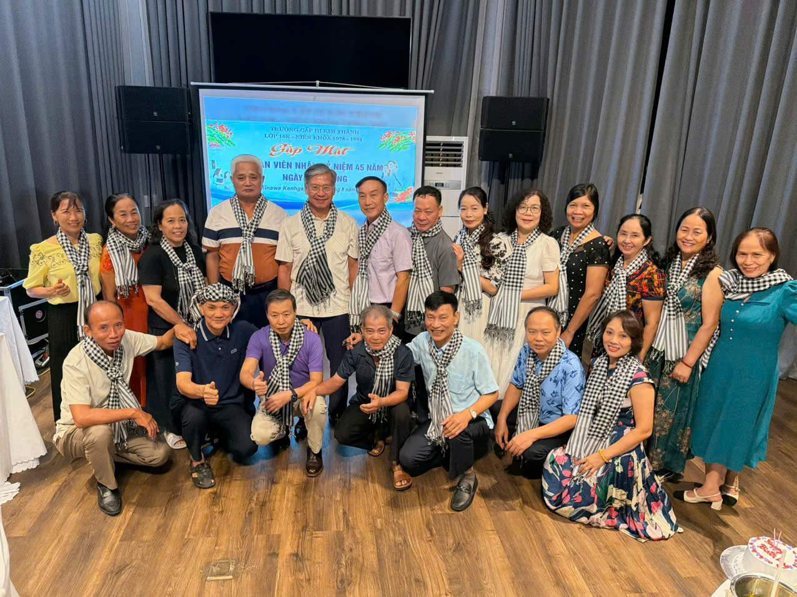
Bốn mươi lăm năm sau ngày ra trường, lớp 10K chúng tôi gặp lại nhau ở Kênh Gà — ai cũng quàng chiếc khăn rằn ri, đứng chung trước tấm phông "Gặp mặt" mà cười như ngày còn ngồi chung một lớp. Tóc đã bạc, mặt đã có nếp nhăn, nhưng ánh mắt nhìn nhau thì vẫn như thuở mười tám. Bạn ơi, tình bạn học trò là thứ càng để lâu càng quý; chúc bạn luôn giữ được những người bạn từ thuở ấy nhé.
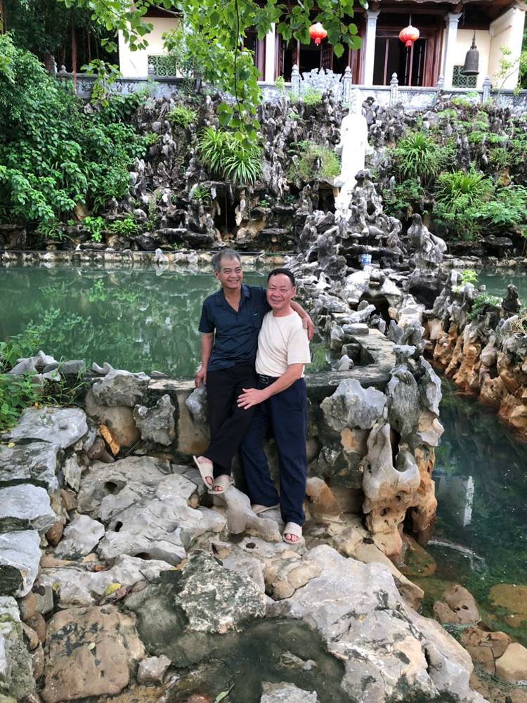
Tôi đứng cùng bạn học bên hồ đá xanh mát, sau lưng là ngôi chùa cổ mái đỏ và tượng Phật trắng giữa hòn non bộ — hai đứa tựa vai nhau cười, như thể 45 năm chỉ là một cái chớp mắt. Đi họp lớp mà có bạn thân bên cạnh thì niềm vui nhân đôi. Bạn ạ, có những tình bạn không cần nói nhiều, chỉ cần đứng cạnh nhau là đủ; chúc bạn luôn có một người bạn như thế nhé.
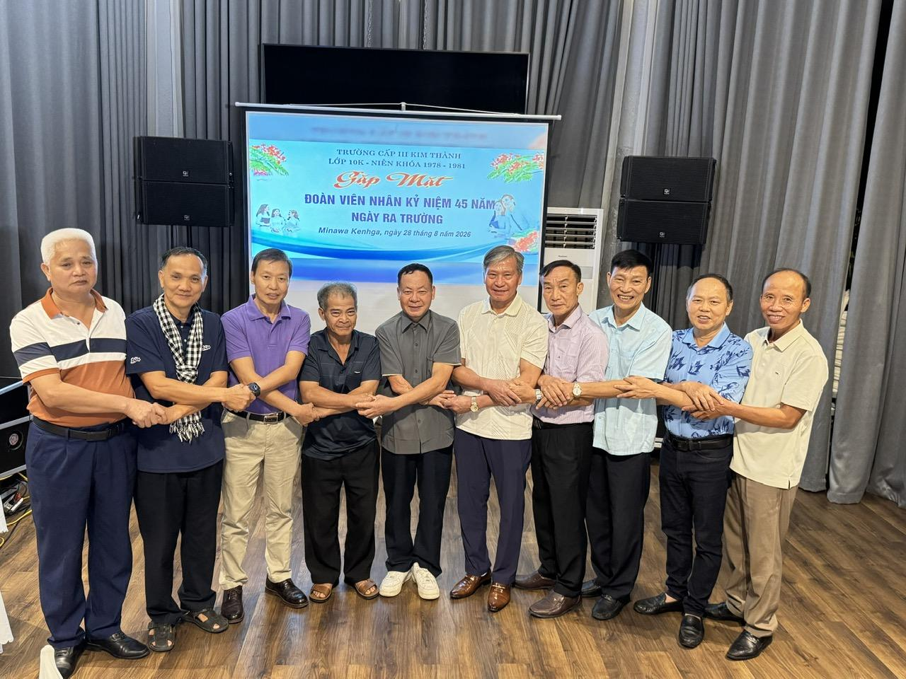
Mười anh em lớp 10K nắm tay nhau trước tấm phông kỷ niệm 45 năm ngày ra trường — người áo tím, người áo xám, người quàng khăn rằn, ai cũng cười tươi. Ngày xưa cùng nhau cắp sách đến trường, giờ tóc bạc rồi vẫn nắm tay nhau thế này. Bạn ơi, 45 năm qua đi, cái nắm tay này vẫn ấm như ngày đầu; chúc bạn luôn có những người anh em để nắm tay như thế nhé.
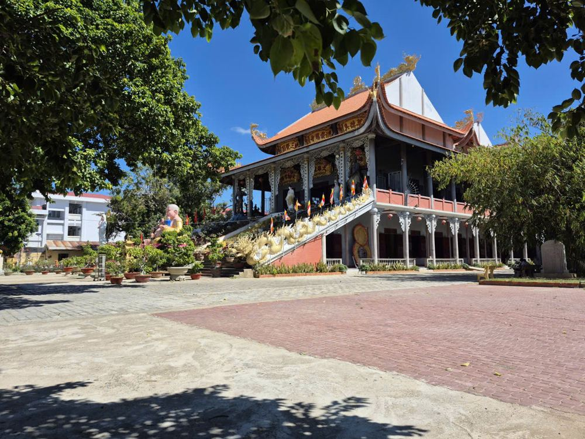
Ngôi chùa cổ mái cong, rồng vàng uốn lượn dọc cầu thang, trời xanh ngắt trên đầu — cả lớp chúng tôi ghé thăm trước khi về dự tiệc gặp mặt. Đứng giữa sân chùa rộng mà lòng nhẹ bẫng, bao nhiêu ồn ào đều ở lại ngoài cổng. Bạn ạ, đi xa để ngắm cảnh, về gần để thấy lòng mình lắng lại; chúc bạn luôn tìm được một góc bình yên như thế nhé.
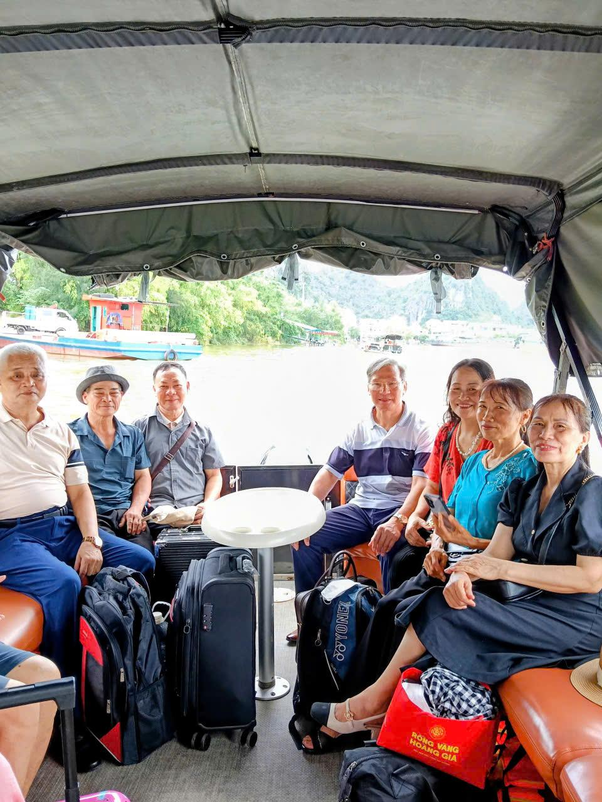
Cả lớp lên thuyền, hành lý xếp gọn dưới chân, sông nước và núi xanh trôi qua ngoài ô cửa — ai cũng háo hức như trẻ con được đi chơi xa. Ngồi trên thuyền mà kể chuyện ngày xưa thì hết ngày cũng chưa hết chuyện. Bạn ơi, có những chuyến đi vui nhất không phải ở điểm đến mà ở người ngồi cùng; chúc bạn luôn có những người bạn đồng hành như thế nhé.
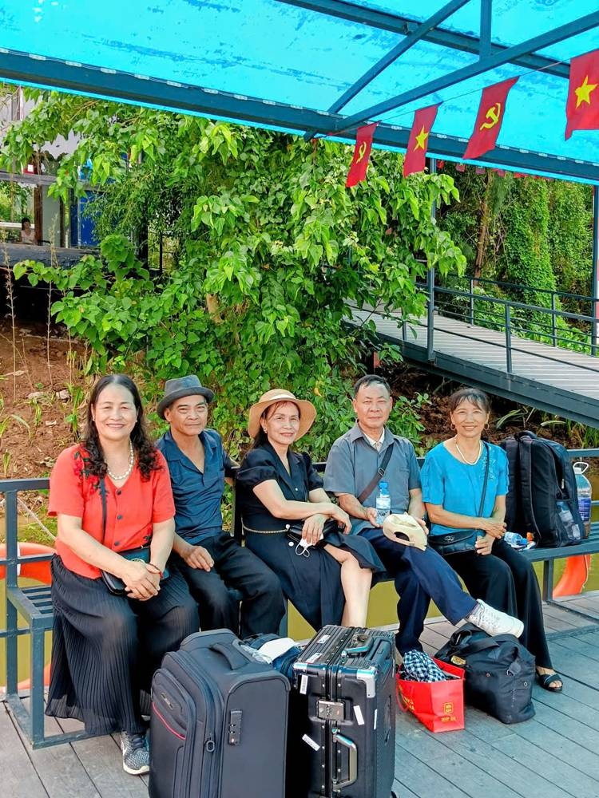
Năm anh em chúng tôi ngồi chờ thuyền ở bến, vali xếp gọn trước mặt, trên đầu là cờ đỏ tung bay — ai cũng cười tươi, sẵn sàng cho chuyến đi xuôi dòng. Chờ thuyền mà lòng rộn ràng như chờ một điều gì đẹp lắm. Bạn ạ, niềm vui đôi khi bắt đầu ngay từ lúc ngồi chờ; chúc bạn luôn háo hức như thế trước mỗi chuyến đi nhé.
Nhóm dinh dưỡng Nguyễn Hường — 10/5/2026. Buổi gặp mặt của nhóm dinh dưỡng Nguyễn Hường: cùng tập yoga, cùng nấu một bữa tối lành mạnh và quây quần bên mâm cơm — ăn ngon, sống khỏe, vui cùng nhau.
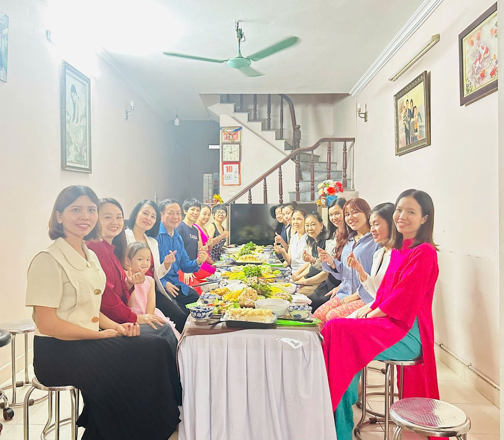
Mười lăm người chúng tôi ngồi quanh bàn ăn dài, mâm cơm đầy những món ngon lành — bún thang, gà luộc, rau thơm xếp đẹp như một bức tranh. Tôi ngồi bên trái bàn, áo xanh, cùng mọi người thả tim về phía máy ảnh, bé gái váy hồng ngồi cạnh các chị cũng cười chúm chím. Bạn ơi, ăn cùng nhau ngon hơn ăn một mình rất nhiều; chúc bạn luôn có những bữa cơm ấm cúng như thế bên những người thân yêu nhé.
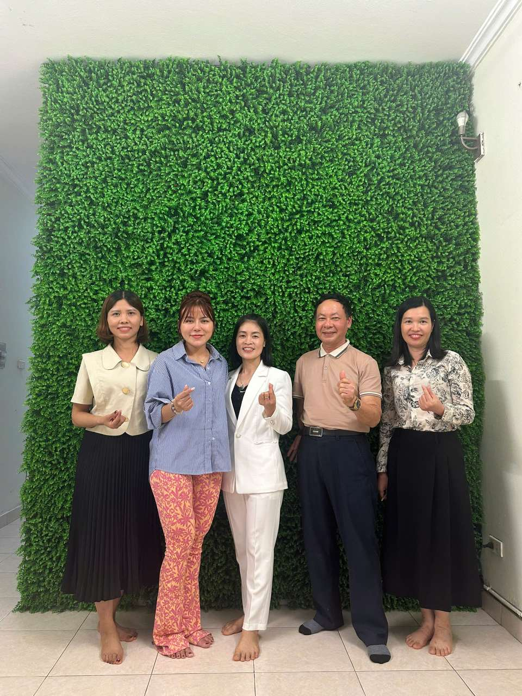
Năm chúng tôi đứng trước bức tường cây xanh mướt, ai cũng thả tim và giơ ngón cái — tôi đứng cạnh chị mặc vest trắng, áo polo be, cười tươi hết cỡ. Buổi gặp mặt của nhóm dinh dưỡng Nguyễn Hường hôm ấy vui từ giờ tập đến lúc chụp hình. Bạn ạ, có bạn đồng hành thì việc giữ gìn sức khỏe cũng thành niềm vui; chúc bạn luôn có những người bạn như thế nhé.
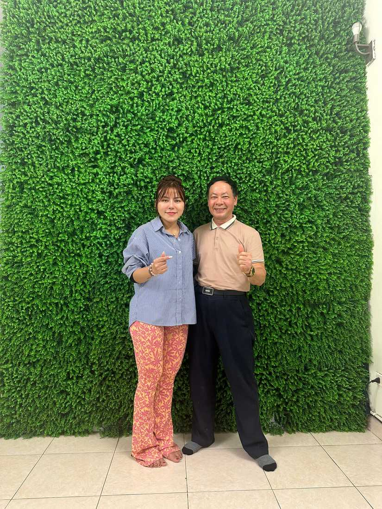
Tôi đứng cạnh một chị trong nhóm trước bức tường cây xanh, cả hai cùng giơ ngón cái — khỏe mạnh là niềm vui lớn nhất ở tuổi nào cũng vậy. Chị mặc áo sọc xanh quần hoa, cười tươi rói, còn tôi thì áo polo be quen thuộc. Bạn ơi, sức khỏe không mua được bằng tiền, chỉ có được bằng thói quen mỗi ngày; chúc bạn luôn khỏe mạnh và vui vẻ nhé.
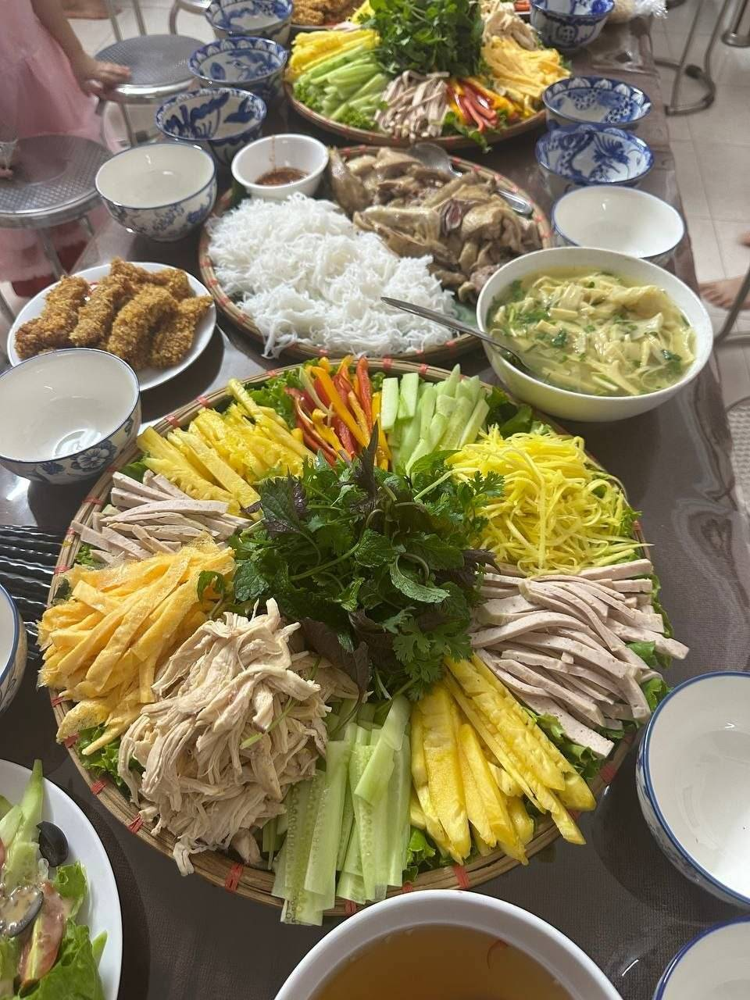
Mẹt bún thang xếp đẹp như một bức tranh — gà xé, trứng vàng, giò lụa, dưa chuột xanh và rau thơm ở giữa, bên cạnh là bún trắng, thịt gà luộc và bát canh măng nóng hổi. Bữa tối của nhóm dinh dưỡng hôm ấy ngon miệng mà vẫn lành mạnh, đúng tinh thần "ăn ngon, sống khỏe". Bạn ạ, ăn uống lành mạnh không hề nhạt nhẽo — chỉ cần khéo sắp xếp một chút là đủ; chúc bạn luôn có những bữa ăn ngon và lành nhé.
Hà Nội tất niên 2025. Tiệc tất niên cuối năm 2025 của CLB Doanh nhân thế kỷ 21 và Liên minh các CLB Tri thức và Sách: cả nhà quây quần trong sắc đỏ, chụp ảnh tập thể trước phông Year End Party & Happy New Year 2026 và trên sân khấu đón xuân.
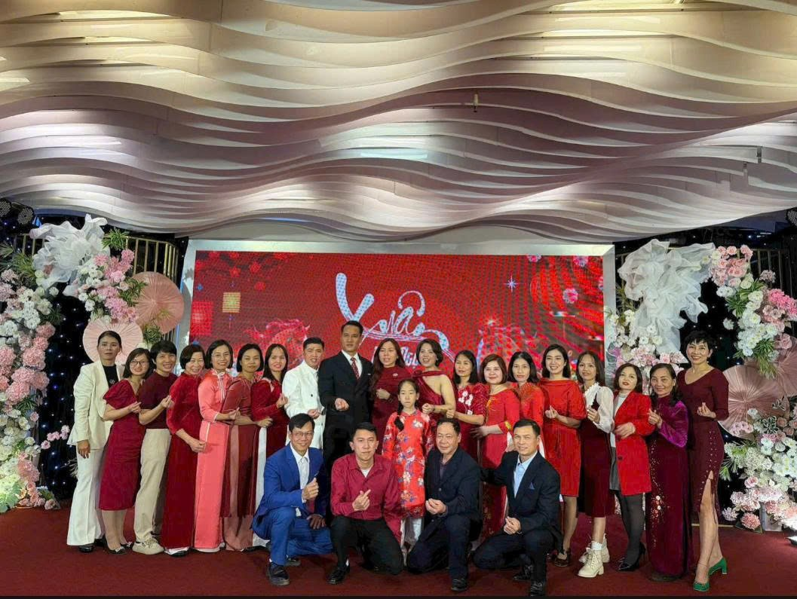
Hai mươi mốt người chúng tôi chụp chung một tấm hình tất niên — hàng sau đứng, hàng trước quỳ, ai cũng mặc đỏ rực rỡ, sau lưng là phông xuân đỏ với đèn lồng và hoa đào. Một năm khép lại trong tiếng cười, một năm mới mở ra trước mắt. Bạn ơi, tất niên vui nhất là khi cả nhà còn đủ nhau thế này; chúc bạn và gia đình một năm mới an khang, thịnh vượng nhé.
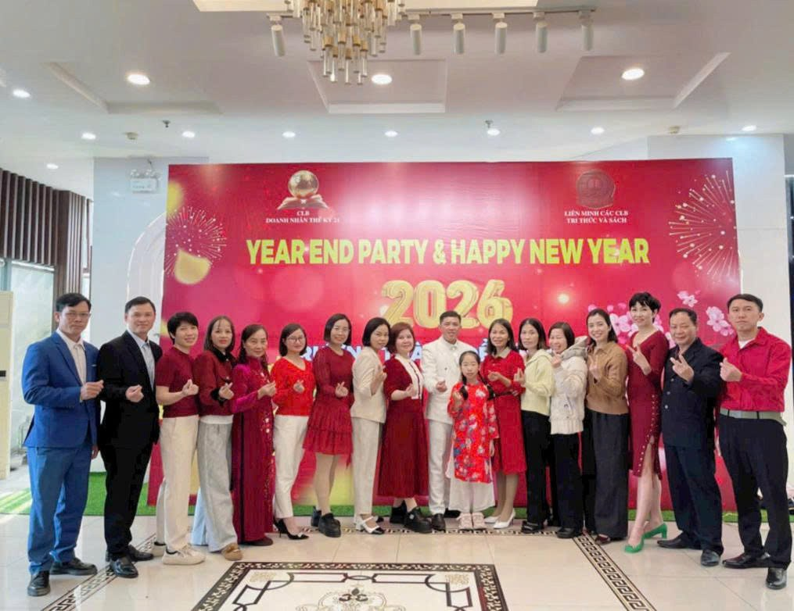
Chúng tôi đứng trước tấm phông "Year End Party & Happy New Year 2026" của CLB Doanh nhân thế kỷ 21 và Liên minh các CLB Tri thức và Sách — mười bảy người, ai cũng áo đỏ, cùng giơ tay thả tim về phía máy ảnh. Năm cũ qua đi, năm mới đến, tình thân thì vẫn còn nguyên. Bạn ạ, cuối năm là lúc nhìn lại những gì mình đã có; chúc bạn bước sang năm mới với thật nhiều niềm vui nhé.
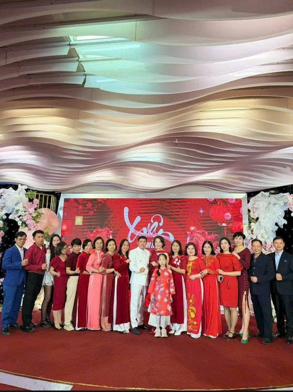
Trên sân khấu trải thảm đỏ, cả nhà chúng tôi đứng chung trước phông chữ "Xuân" — đèn lồng đỏ, hoa đào hồng, áo dài đỏ thắm. Bé gái áo dài đỏ đứng giữa, cười chúm chím như một nụ hoa nhỏ. Bạn ơi, xuân về là khi nhà nhà sum họp; chúc bạn một mùa xuân ấm áp bên những người thương nhé.
Cafe sáng 30/8/2026 — Cây xăng Bình Dân. Một buổi sáng thong thả ngồi cà phê cùng các anh: trà nóng, hạt dưa, chuyện trò rôm rả dưới hàng đèn lồng đỏ đón Quốc khánh.
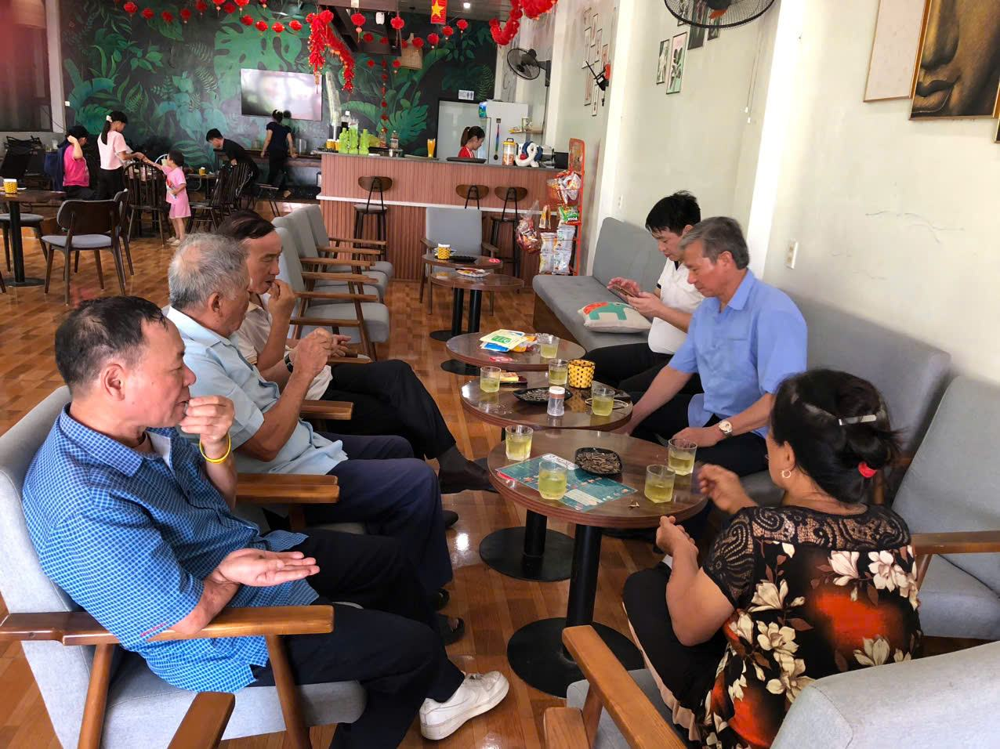
Sáng 30/8, chúng tôi ngồi cà phê ở Cây xăng Bình Dân — trà nóng, hạt dưa, chuyện trò rôm rả. Trên trần treo đầy đèn lồng đỏ đón Quốc khánh, ngoài kia nắng sớm vàng ươm. Ngồi với nhau thế này, chẳng cần vội vã đi đâu. Bạn ơi, có những buổi sáng đẹp nhất là buổi sáng được ngồi lại cùng bạn bè; chúc bạn luôn có những buổi sáng thong thả như thế nhé.
Malaysia — 18/6/2026. Ngày đầu của hành trình Malaysia – Singapore 18–22/6/2026: hạ cánh xuống sân bay Kuala Lumpur, thăm thánh đường Putra mái vòm hồng ở Putrajaya, ghé cửa hàng Herbalife Malaysia và đứng trước tháp đôi Petronas cao vời vợi.
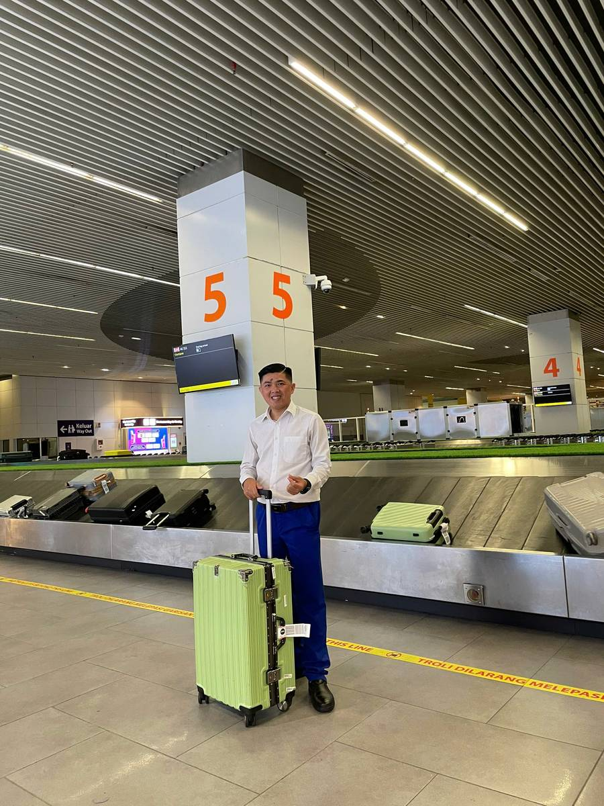
Đoàn chúng tôi vừa hạ cánh xuống sân bay quốc tế Kuala Lumpur, Malaysia. Vali xanh đã ra băng chuyền số 5 — hành trình Malaysia – Singapore 18–22/6/2026 chính thức bắt đầu. Chúc các bạn một ngày mới thật nhiều niềm vui và bình an.
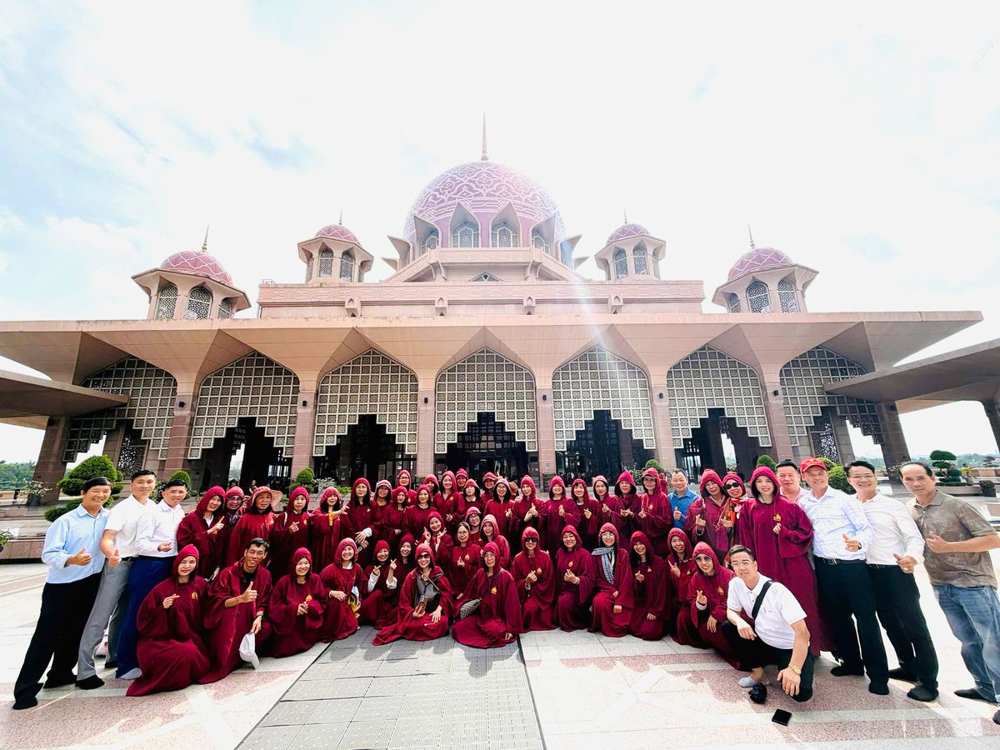
Cả đoàn chúng tôi chụp hình kỷ niệm trước thánh đường Putra ở Putrajaya — ngôi thánh đường mái vòm hồng nổi tiếng của Malaysia. Các chị em khoác áo choàng đỏ, ai cũng tươi cười, cùng giơ tay hình trái tim. Một khoảnh khắc đẹp của đoàn Việt Nam trên đất bạn. Chúc các bạn luôn giữ được nụ cười rạng rỡ như thế này nhé.
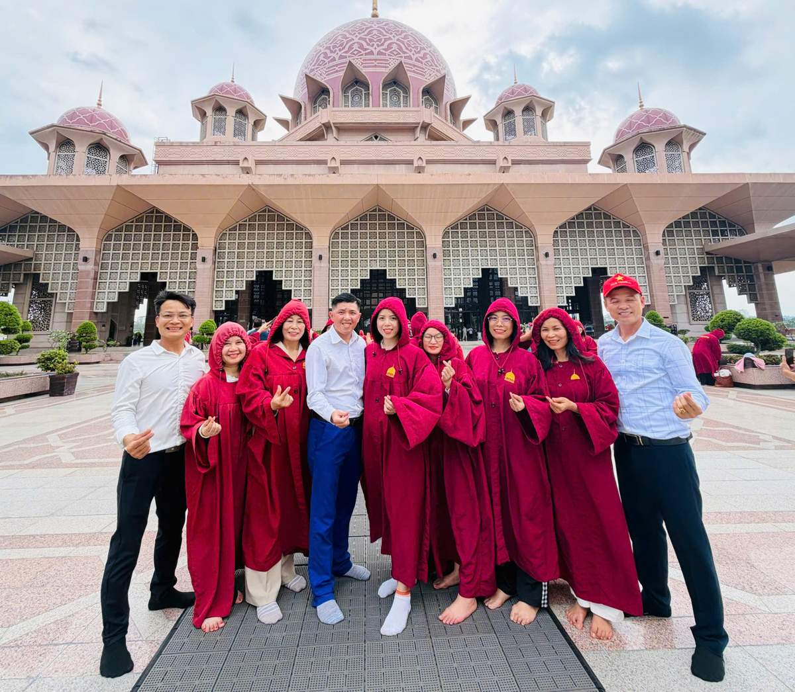
Chín anh chị em trong đoàn chụp chung một tấm hình trước thánh đường Putra. Mái vòm hồng, tường hoa văn chạm khắc tinh xảo — đứng trước công trình này ai cũng phải ngỡ ngàng. Chúc các bạn một ngày thật an yên và nhiều niềm vui.
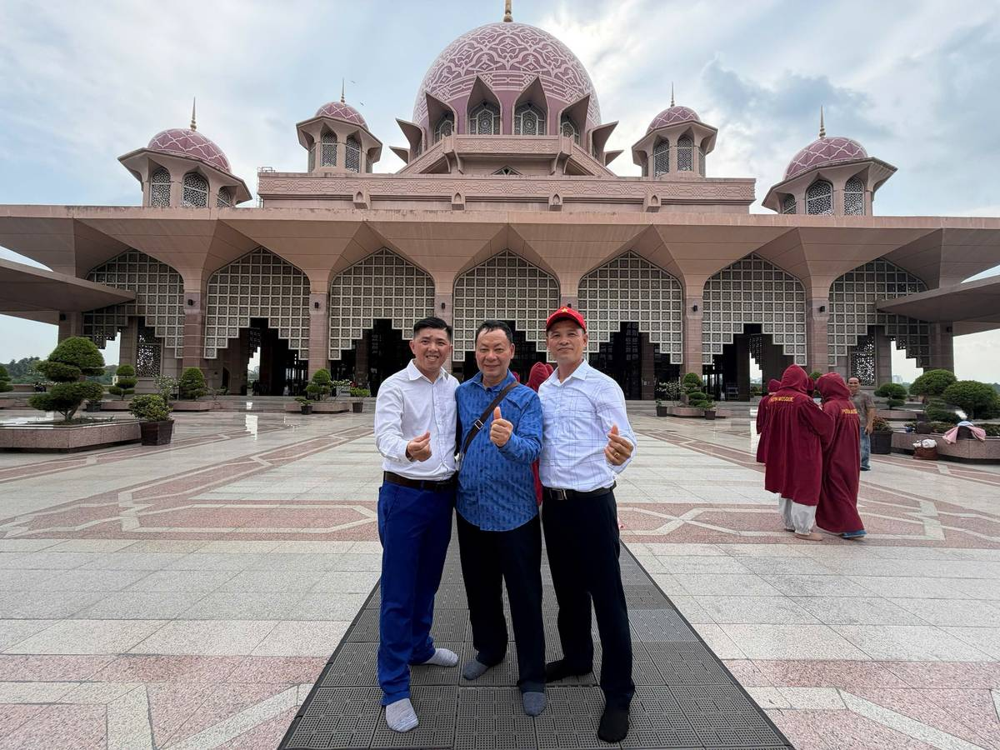
Ba anh em trong đoàn chụp chung trước cổng thánh đường Putra. Người giơ ngón cái, người làm trái tim — mỗi người một kiểu mà nụ cười thì giống nhau. Đi xa mới thấy tình anh em thêm gắn bó. Chúc các bạn luôn có những người bạn đồng hành tốt như vậy.
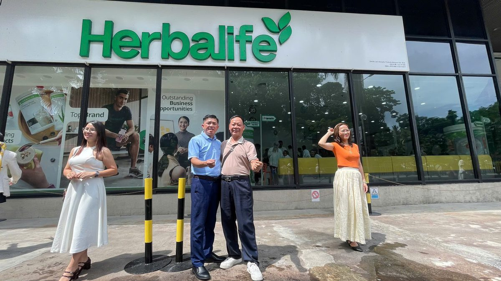
Tôi cùng một anh trong đoàn ghé thăm cửa hàng Herbalife ở Malaysia trong chuyến đi. Đi xa mà gặp thương hiệu quen thuộc, cảm giác cũng thân thương. Chúc các bạn đi đâu cũng gặp được những điều thân thương.
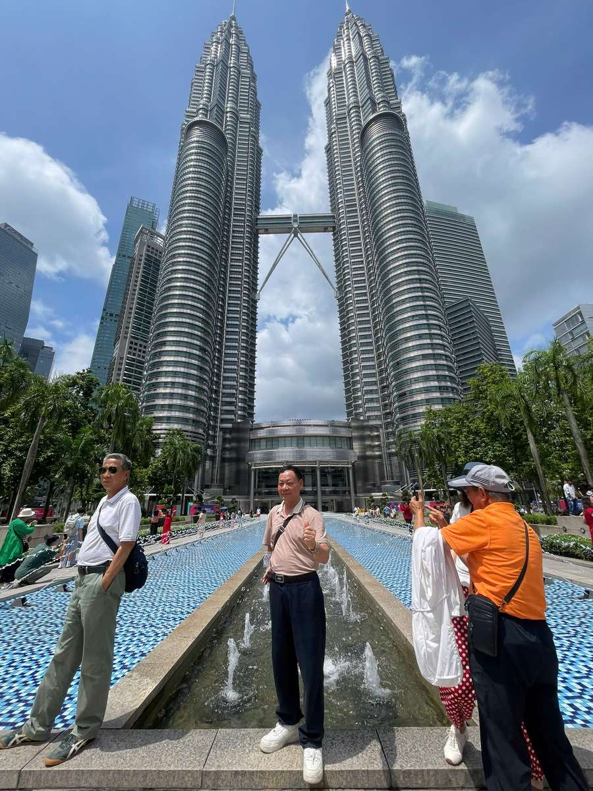
Tôi đứng giữa đài phun nước, sau lưng là tháp đôi Petronas cao vời vợi ở Kuala Lumpur. Hai tòa tháp thép và kính vươn lên trời xanh — nhìn tận mắt mới thấy hết vẻ đẹp của nó. Chúc các bạn một ngày mới tràn đầy năng lượng và niềm vui.
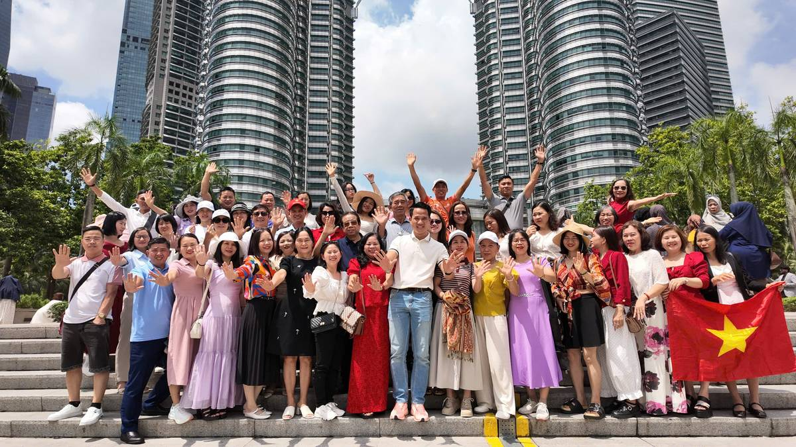
Cả đoàn chúng tôi cùng vẫy tay chào trước tháp đôi Petronas, lá cờ đỏ sao vàng tung bay ở góc phải khung hình. Đi xa mà mang theo màu cờ Tổ quốc — tự hào lắm các bạn ạ. Chúc các bạn luôn tự hào về quê hương mình, đi đâu cũng nhớ về Việt Nam.
Điều cuộc sống dạy ta qua từng chặng đường.
Những khoảng lặng để hiểu mình và hiểu người.
Học hỏi, trưởng thành và sống có chủ đích.
Nuôi dưỡng lòng tử tế và tinh thần tích cực.
Mỗi chia sẻ là một lời mời nhìn sự việc bằng tâm thế bình tĩnh và chân thật. Bạn có thể bắt đầu từ bất kỳ điều gì đang chạm đến mình.
“Một chút suy ngẫm hôm nay có thể mở ra một lựa chọn tử tế hơn ngày mai.”
Gửi lời chia sẻ ↗Nhìn lại trải nghiệm để nhận ra điều gì thực sự quan trọng với mình.
Những lựa chọn thường ngày góp phần tạo nên cách ta sống cùng nhau.
Không có công thức chung cho một cuộc sống đẹp. Với tôi, đó là hành trình quan sát, chiêm nghiệm và chọn cách sống phù hợp với những giá trị mình tin tưởng.
Đón nhận những câu chuyện và bài học từ đời sống.
Dành thời gian lắng nghe cảm xúc và suy nghĩ của mình.
Tìm ra điều có ý nghĩa, thay vì vội vàng kết luận.
Chia sẻ chân thành để cùng nhau sống tích cực hơn.